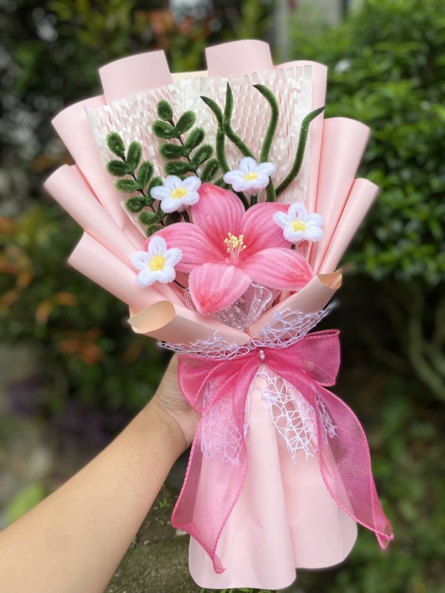
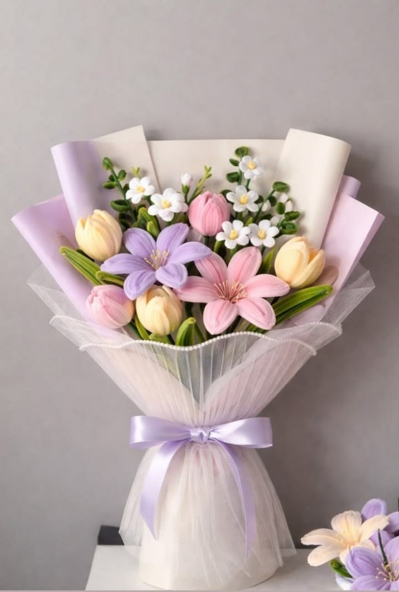
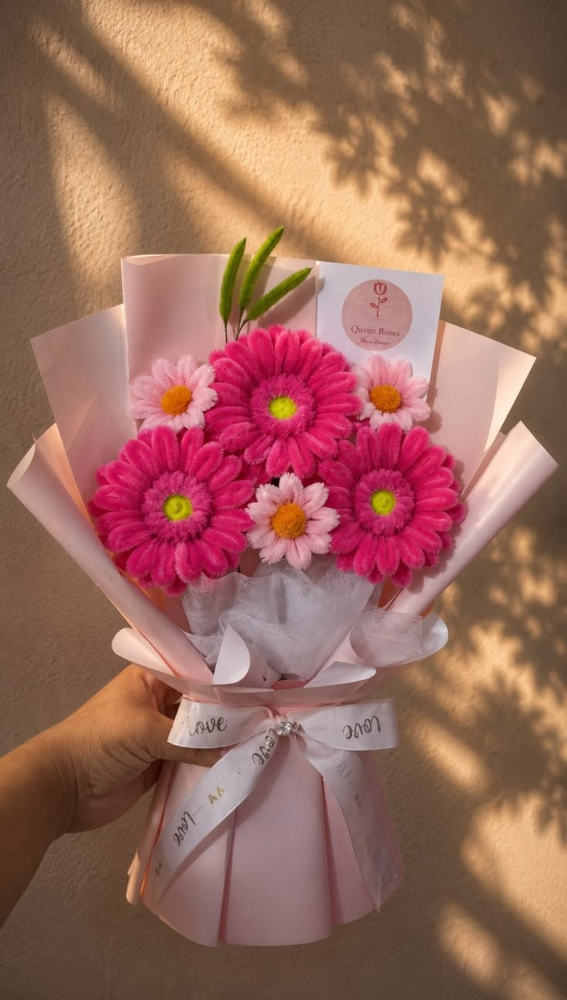
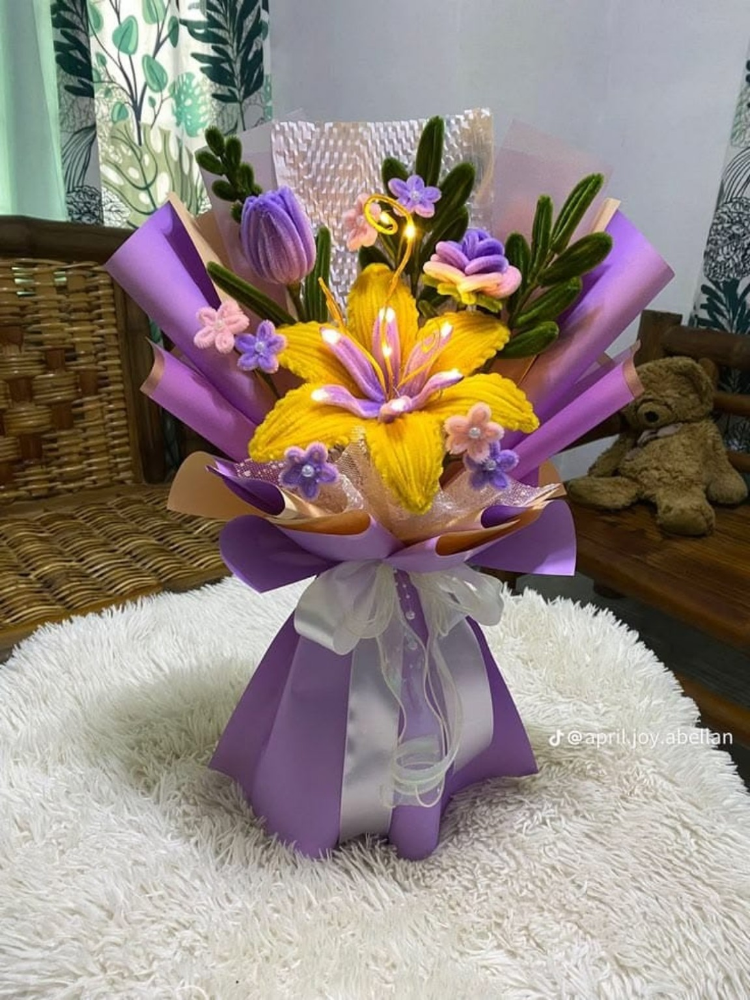
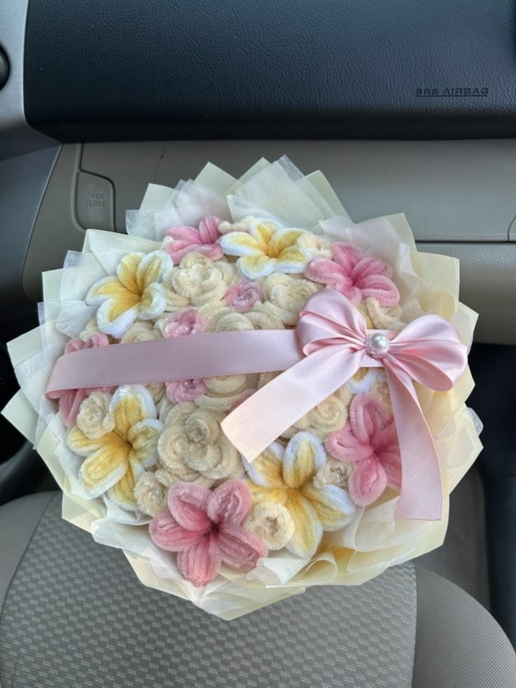
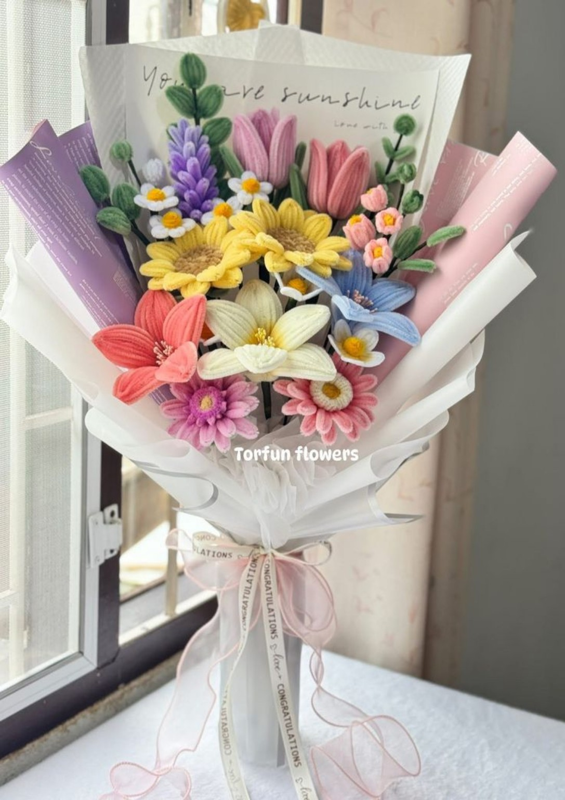

01 / ROMÁNTICO
Amor en rosa
Un detalle delicado para decir “me importas”.
DETALLES QUE HABLAN POR TI
Diseñamos ramos únicos para regalar sonrisas, celebrar momentos y convertir pequeños detalles en recuerdos inolvidables.
Descubre nuestros ramos ↗

UN DETALLE, MIL EMOCIONES
En Queen Rose creemos que las flores son una forma hermosa de expresar cariño. Por eso preparamos ramos llenos de color, dedicación y pequeños detalles que hacen especial cada regalo.
Ya sea un cumpleaños, un aniversario, una sorpresa o simplemente un “pensé en ti”, queremos ayudarte a compartir un sentimiento.
Hablemos de tu idea →NUESTROS FAVORITOS
Conoce algunos de nuestros diseños. Cada ramo puede variar según disponibilidad y personalizarse para esa persona especial.
Un detalle delicado para decir “me importas”.

Colores vivos para alegrar cualquier día.
Una mezcla suave, dulce y llena de encanto.

Un diseño llamativo para sorprender.

Un ramo original que se queda en la memoria.

Una explosión de color para celebrar la vida.
Las flores no necesitan palabras
para hacer sentir algo bonito.
MIRA NUESTRO MUNDO FLORAL
Descubre nuestros videos y déjate inspirar por la belleza de cada detalle.
Detalles que enamoran
Inspiración floral
Un regalo especial
¿LISTO PARA SORPRENDER?
Cuéntanos para quién es el ramo y qué quieres expresar. ¡Creamos algo especial contigo!
Visítanos en Instagram ↗Enlace de ejemplo: reemplázalo por el perfil real de la empresa.